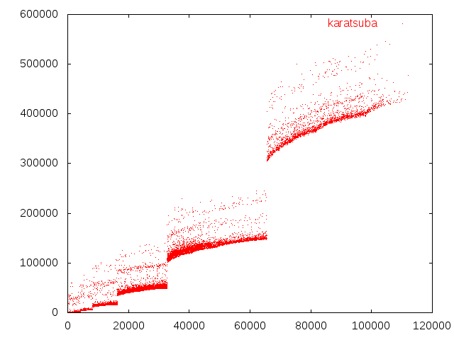

| tags:[ code ]
Karatsuba v c++
Násobení polynomů lze řešit několika způsoby, zde si promluvíme o jednom z těch zajímavých.
Karatsuba
Karatsuba využívá toho, že pro výpočet $(Ax + B)(Cx + D)$ nemusíme dělat čtyři násobení, ale stačí tři. Vyplývá to z následujícího:
(Ax + B)(Cx + D) =
= ACx^2 + (AD+BC)x + BD
Víme že: (A+B)(C+D) = AD + BC + AC + BD
A proto: AD + BC = (A+B)(C+D) - AC - BD
Nahrazením získáme:
ACx^2 + ((A+B)(C+D) - AC - BD)x + BD
Protože AC a BD už pronásobené máme, tak stačí spočítat $(A+B)(C+D)$ a od toho je odečíst. Máme tedy pouze tři násobení místo čtyř. Pro násobení polynomů to funguje podobně, navíc ale rekurzivně. Proto je výsledná složitost $O(N^{\log_2(3)})$, to je cca $N^{1.585}$.
Kód a měření
To vede na kód (pochopitelnost 60% / efektivita N^1585):
#define REP(i, n) for (int i = 0; i < n; i++)
#define F(W) REP(i,W)
#define FF(W) REP(j,W)
void kar(ll *a,ll *b,ll L,ll *c,ll *v,ll *w,ll h,ll m){
if(h>=m)return;
if(L<=8){
F(L)FF(L)c[i+j]+=a[i]*b[j];
return;
}
ll d(L>>1),*A=v,*B=w;
v=v+L,w=w+L;
F(L)A[i]=B[i]=0;
kar(a,b,d,A,v,w,h,m);
kar(a+d,b+d,d,B,v,w,h+d,m);
F(L)c[i]+=A[i],c[i+L]+=B[i],c[i+d]-=A[i]+B[i];
F(d)A[i]=a[i]+a[i+d],B[i]=b[i]+b[i+d];
kar(A,B,d,c+d,v,w,h,m);
}
ll polymul(ll *a,ll A,ll *b,ll B,ll *c){
static ll V[MX],W[MX];
ll l(max(A,B)),N(1);
while(N<l)N<<=1;
FT(A,N)a[k]=0;
FT(B,N)b[k]=0;
F(N<<1)c[i]=0;
kar(a,b,N,c,V,W,0,min(A,B));
return (A+B)-1;
}
Tento kód byl poskytnut Morasem.
Měření rychlosti této implementace algoritmu Karatsuba:
